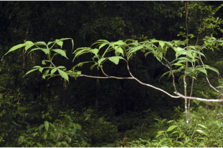
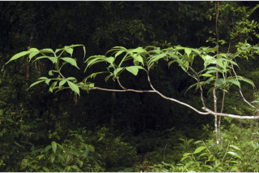
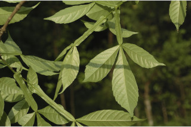
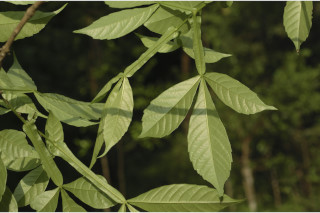
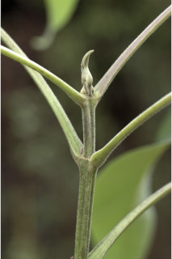
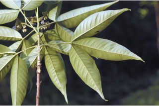
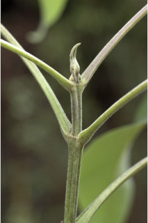
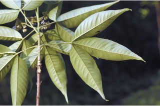

Large deciduous trees up to 20 m tall.
20 ಮೀ. ಎತ್ತರದ ದೊಡ್ಡ ಗಾತ್ರದ ಎಲೆಯುದುರುವ ಮರಗಳು.
Large deciduous trees up to 20 m tall.
பெரிய இலையுதிர் மரம், 20 மீ. உயரம் வரை வளரக்கூடியது.
Bark greyish, lenticellate, scaly when mature; blaze yellowish.
ತೊಗಟೆ ಬೂದು ಬಣ್ಣದಲ್ಲಿದ್ದು,ವಾಯುವಿನಿಮಯ ಬೆಂಡು ರಂಧ್ರಗಳ ಸಮೇತವಿದ್ದು ಬಲಿತಾಗ ಚಕ್ಕೆ ರೂಪದಲ್ಲಿರುತ್ತದೆ;ಕಚ್ಚು ಮಾಡಿದ ಜಾಗ ಹಳದಿ.
Bark greyish, lenticellate, scaly when mature; blaze yellowish.
மரத்தின் பட்டை சாம்பல் நிறமானது, பட்டைத்துளைகள் (லெண்டிசெல்லேட்) உடையது, முதிரும் போது செதில்களாக உதிருபவை; உள்பட்டை மஞ்சள் நிறமானது.
Young branchlets quadrangular, pubescent, lenticellate.
ಕಿರುಕೊಂಬೆಗಳು 4-ಕೋನಯುಕ್ತವಾಗಿದ್ದು ಮೃದುತುಪ್ಪಳದಿಂದ ಕೂಡಿದ್ದು ವಾಯುವಿನಿಮಯ ಬೆಂಡು ರಂಧ್ರಗಳ ಸಮೇತವಿರುತ್ತವೆ.
Young branchlets quadrangular, pubescent, lenticellate.
சிறிய நுனிக்கிளைகள் குறுக்குவெட்டுத் தோற்றத்தில் நான்கு கோணங்களுடையது, உரோமங்களுடையது, பட்டைத்துளைகள் (லெண்டிசெல்லேட்) உடையது.
Leaves compound, usually trifoliate or rarely 5-foliate (with 2 small leaflets), opposite, decussate; rachis pulvinate, planoconvex in cross section, winged, minutely pubescent; leaflets sessile, 7-17 x 2-6.5 cm, narrow elliptic or elliptic-lanceolate, apex acuminate, base cuneate, margin serrate or entire, chartaceous, glaucous and minutely pubescent or glabrous beneath; midrib canaliculate above; secondary_nerves 10-20 pairs; tertiary_nerves reticulo-percurrent.
ಎಲೆಗಳು ಸಂಯುಕ್ತ ಮಾದರಿಯವುಗಳಾಗಿದ್ದು ಸಾಮಾನ್ಯವಾಗಿ 3-ಕೂಡೆಲೆಗಳನ್ನು ಅಥವಾ ಅಪರೂಪವಾಗಿ 5-ಕೂಡೆಲೆಗಳನ್ನು(2 ಚಿಕ್ಕ ಕಿರುಪತ್ರಗಳನ್ನೊಳಗೊಂಡು) ಹೊಂದಿದ್ದು, ಅಭಿಮುಖ, ಕತ್ತರಿಯಾಕಾರದ ಜೋಡನಾ ವ್ಯವಸ್ಥೆಯಲ್ಲಿರುತ್ತವೆ;ವೃಂತಗಳು ಬುಡದಲ್ಲಿ ಉಬ್ಬಿರುತ್ತದೆ, ಅಡ್ಡ ಸೀಳಿದಾಗ ಸಪಾಟ ಪೀನ ಮಧ್ಯದ ಆಕಾರ ಹೊಂದಿರುತ್ತವೆ ,ರೆಕ್ಕೆಗಳ ಸಮೇತವಿದ್ದು ಸೂಕ್ಷ್ಮವಾದ ಮೃದುತುಪ್ಪಳದಿಂದ ಕೂಡಿರುತ್ತವೆ;ಕಿರುಪತ್ರಗಳು ತೊಟ್ಟುರಹಿತವಾಗಿದ್ದು,7 – 17 X 2 – 6.5 ಸೆಂ.ಮೀ. ಗಾತ್ರ ಹೊಂದಿದ್ದು ಸಂಕುಚಿತ ಅಂಡವೃತ್ತ- ಅಥವಾ ಅಂಡವೃತ್ತ - ಭರ್ಜಿಯ ಆಕಾರ ಹೊಂದಿದ್ದು, ಕ್ರಮೇಣ ಚೂಪಾಗುವ ತುದಿ, ಬೆಣೆಯಾಕಾರದ ಬುಡ, ಗರಗಸ ದಂತಿತವಾದ ಅಥವಾ ನಯವಾದ ಅಂಚು,ಕಾಗದವನ್ನೋಲುವ ಮೇಲ್ಮೈ ಹೊಂದಿದ್ದು ತಳಭಾಗದಲ್ಲಿ ಮಾಸಲು ಬೂದು ಹಸಿರು ಬಣ್ಣ ಮತ್ತು ಸೂಕ್ಷ್ಮವಾದ ಮೃದುತುಪ್ಪಳದಿಂದ ಕೂಡಿರುತ್ತವೆ ಅಥವಾ ರೋಮರಹಿತವಾಗಿರುತ್ತವೆ;ಮಧ್ಯನಾಳ ಮೇಲ್ಭಾಗದಲ್ಲಿ ಕಾಲುವೆಗೆರೆ ಸಮೇತವಿರುತ್ತದೆ;ಎರಡನೇ ದರ್ಜೆಯ 10 ರಿಂದ 20 ಜೋಡಿಗಳಿರುತ್ತವೆ; ಮೂರನೇ ದರ್ಜೆಯ ನಾಳಗಳು ಜಾಲಬಂಧ ನಾಳ ವಿನ್ಯಾಸದಲ್ಲಿದ್ದು ಎಲೆಯ ದಿಂಡಿಗೆ ಅಡ್ಡವಾಗಿ ಕೂಡುವ ಮಾದರಿಯಲ್ಲಿರುತ್ತವೆ.
Leaves compound, usually trifoliate or rarely 5-foliate (with 2 small leaflets), opposite, decussate; rachis pulvinate, planoconvex in cross section, winged, minutely pubescent; leaflets sessile, 7-17 x 2-6.5 cm, narrow elliptic or elliptic-lanceolate, apex acuminate, base cuneate, margin serrate or entire, chartaceous, glaucous and minutely pubescent or glabrous beneath; midrib canaliculate above; secondary_nerves 10-20 pairs; tertiary_nerves reticulo-percurrent.
இலைகள் கூட்டிலை, பெரும்பாலும் மூவ்விலை கூட்டிலைகள் அல்லது அரிதாக ஐவ்விலை (2 சிறிய சிற்றிலைகள் உடையது), எதிரடுக்கமானவை, குறுக்குமறுக்கமானவை; மத்தியகாம்பு (ராக்கிஸ்) பல்வினேட், குறுக்குவெட்டுத் தோற்றத்தில் பிளேனோகான்வக்ஸ், இறகுடையது, நுண்ணிய உரோமங்களுடையது; சிற்றிலைகள் காம்பற்றது, 7-17 X 2-6.5 செ.மீ., குறுகிய நீள்வட்ட வடிவானது அல்லது நீள்வட்டம்-ஈட்டி வடிவானது, அலகின் நுனி அதிக்கூரியது, அலகின் தளம் ஆப்பு வடிவானது, அலகின் விளிம்பு ரம்ப பற்களுடையது அல்லது முழுமையானது, சார்ட்டோசியஸ், அலகின் கீழ்பரப்பு மெழுகு பூசியது போன்றது அல்லது சாம்பல் கலந்த நீல நிறமானது (க்களாக்கஸ்) மற்றும் நுண்ணிய உரோமங்களுடையது அல்லது உரோமங்களற்றது; மையநரம்பு மேற்புறத்தில் அலகின் பரப்பைவிட பள்ளமானது; இரண்டாம் நிலை நரம்புகள் 10-20 ஜோடிகள்; மூன்றாம் நிலை நரம்புகள் வலைப்பின்னல்-பெர்க்கரண்ட் போன்றவை.
Inflorescence terminal panicles, minutely pubescent; flowers zygomorphic, blue white tinged.
ಪುಷ್ಪಮಂಜರಿ ತುದಿಯಲ್ಲಿನ ಪುನರಾವೃತ್ತಿಯಾಗಿ ಕವಲೊಡೆಯುವ ಮಾದರಿಯವುಗಳಾಗಿದ್ದು ಸೂಕ್ಷ್ಮವಾದ ಮೃದುತುಪ್ಪಳದಿಂದ ಕೂಡಿರುತ್ತವೆ; ಹೂಗಳು ಉಭಯ ಪಾರ್ಶ್ವ ಅಸಮಾಂಗತೆಯುಳ್ಳ ಮಾದರಿಯಲ್ಲಿದ್ದು ಬಿಳಿ ನೀಲಿ ಛಾಯೆ ಹೊಂದಿರುತ್ತವೆ.
Inflorescence terminal panicles, minutely pubescent; flowers zygomorphic, blue white tinged.
மஞ்சரி தண்டின் நுனியில் காணப்படும் பேனிக்கிள் வகை மஞ்சரி, நுண்ணிய உரோமங்களுடையது; மலர்கள் ஒழுங்கற்றவை (சைகோமார்பிக்), நீல-வெள்ளை நிறமானது.
Drupe, smooth, globose, 0.9 cm across, purplish black; seeds 4.
ಡ್ರೂಪ್ಗಳು ನಯವಾಗಿದ್ದು, ಗೋಳಾಕಾರದಲ್ಲಿದ್ದು,0.9 ಸೆಂ.ಮೀ. ಅಡ್ಡಗಲತೆ ಹೊಂದಿರುತ್ತವೆ, ಕೆನ್ನೀಲಿ ಮಿಶ್ರಿತ ಕಪ್ಪು ಬಣ್ಣ ಹೊಂದಿರುತ್ತವೆ;ಬೀಜಗಳ ಸಂಖ್ಯೆ 4.
Drupe, smooth, globose, 0.9 cm across, purplish black; seeds 4.
உள்ளோட்டுத்தசைகனி (ட்ரூப்), வழுவழுப்பானது, கோள வடிவமானது, 0.9 செ.மீ. குறுக்களவுடையது, பர்புள்-கருப்பு நிறமானது; விதைகள் 4.


 

 



 


